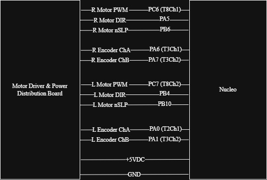

Motors and Encoders
The primary means of movement for Romi is through a differential drive system consisting of two DC motors with integrated quadrature encoders. These components enable both actuation and measurement, allowing the robot to move precisely while also tracking its motion through encoder feedback. Accurate control of motor speed and position is critical for executing distance-based state transitions and maintaining stable line-following behavior.
To drive the motors, we used the Pololu DRV8838 Motor Driver and Power Distribution Board, which was provided as part of the Romi platform. This board integrates dual motor drivers along with power distribution circuitry, simplifying wiring and reducing the need for additional external components. The motors themselves were also part of the Romi chassis and include built-in encoders for measuring wheel rotation.
Control Implementation
Each motor was controlled using a closed-loop PI controller to regulate wheel velocity. The control system uses encoder-derived velocity measurements as feedback and adjusts motor effort to close in on a desired setpoint. This approach helps mitigate disturbances such as friction and load variations.
Encoder position data was also used to compute distance traveled, which served as the primary metric for triggering transitions between states in the finite state machine. This allowed the robot to execute distance-based maneuvers such as straight segments and turns with reasonable consistency.
Mounting
The motors and encoders are integrated into the Romi chassis and require no additional mounting. The motor driver and power distribution board was mounted directly onto the chassis using the provided hardware, ensuring secure electrical connections and minimizing wiring complexity.
Wiring
Each motor is driven through the Pololu motor driver using three control signals: PWM, direction (DIR), and enable (nSLP). The encoders are connected directly to the Nucleo using timer channels configured in quadrature encoder mode.
{kind=link}

The motor driver receives power from the battery, while the Nucleo provides control signals. Encoder signals are read directly by the Nucleo to provide real-time feedback for control and state estimation.